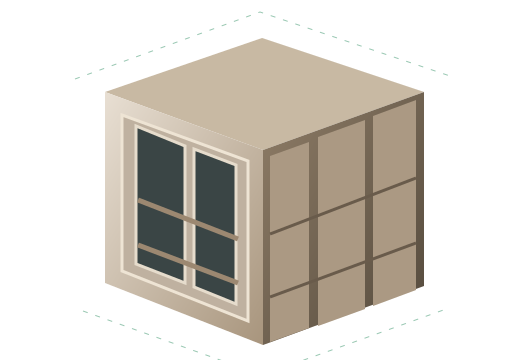

Da ideia ao projeto.
Seu desenho ganha lógica de marcenaria.
Modele no SketchUp, organize módulos e peças e confira materiais e alternativas de corte na Central Plany.
Use retalhos de verdade no projeto e no corte.
Considere retalhos físicos compatíveis com o material e o plano. O reaproveitamento depende das dimensões, orientação e regras de corte; não significa baixa automática de um estoque global.
Um retalho elegível pode entrar entre as opções de chapa do plano.
Modele por comandos, direto no teclado.
O Modo Comandos oferece operações de modelagem com sugestões, destino e parâmetros. A confirmação e as medidas fazem parte do fluxo dentro do SketchUp.
Crie uma caixaria informando a operação e suas dimensões.
Transforme geometria em peças e peças em módulos.
Organize geometria elegível com identificação construtiva. A forma e as propriedades precisam atender aos requisitos da operação.
Reúna peças identificadas em um módulo do projeto.
Insira e dimensione módulos arrastando e clicando.
Posicione módulos diretamente no modelo e ajuste suas dimensões com as ferramentas de inserção.
Defina um ponto de inserção e dimensione a composição.
Central simples de verdade, sem permissões confusas.
Confira Peças, Chapas, Resultado e Materiais em uma Central dedicada. Depois de alterar o modelo, atualize o levantamento para trabalhar com as informações atuais.
Compare o levantamento com a alternativa de corte escolhida.
O projeto começa no SketchUp.

Um armário de exemplo, com módulos e medidas. O Plany acrescenta ferramentas de modelagem com lógica construtiva ao trabalho no SketchUp.
Geometria identificada como peças.
| Peça | Medidas (mm) | Material | Qtd. |
|---|---|---|---|
| Lateral | 720 × 560 | MDF 18 mm | 2 |
| Base | 764 × 560 | MDF 18 mm | 1 |
| Prateleira | 764 × 530 | MDF 18 mm | 1 |
| Porta | 716 × 397 | MDF 18 mm | 2 |
Identificação, dimensões e material ajudam a conferir o levantamento. A geometria precisa atender aos requisitos técnicos da operação.
Conferência na Central Plany.
Compare peças, chapas e uma alternativa de corte. Retalhos precisam ser físicos, elegíveis e compatíveis. Depois de mudar o modelo, atualize o levantamento.
Visualização ilustrativa, com dados fictícios. Não é uma captura do SketchUp ou da Central Plany. A distribuição de peças desenhada acima não é um plano de corte calculado.